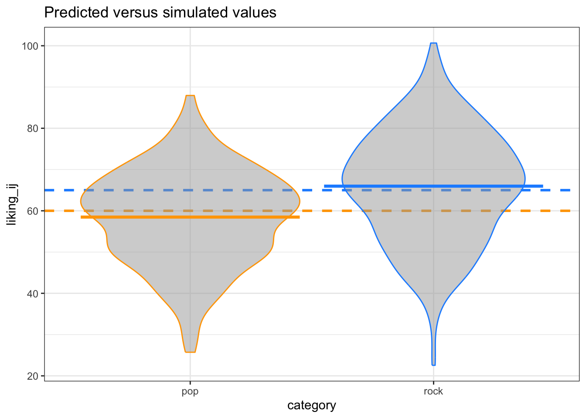
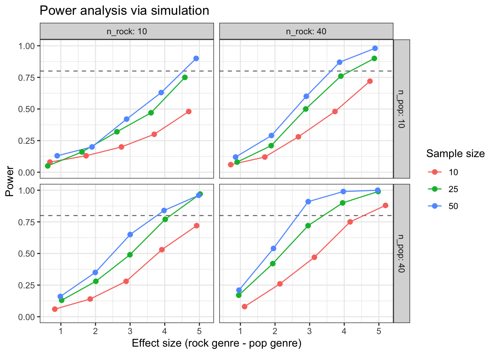

# uncomment the line below to install the {pacman} library on your computer
# install.packages("pacman")
pacman::p_load(
lme4, # model specification / estimation
lmerTest, # provides p-values in the model output
future, # parallelization
future.apply, # fast automation
furrr, # fast functional programming
faux, # simulate from multivariate normal distribution
broom.mixed, # extracting tidy data from model fits
tidyverse, # data wrangling and visualisation
gt # nice tables
)
faux_options(verbose = FALSE)R
Setup
We will need to use several R packages to optimize our workflow and fit mixed effects models. We can use the p_load() function from the {pacman} library to automate installing these packages onto our machine and then load them into our search path.
We will also set the pseudo-random number generator seed to 02138 to make the stochastic components of our simulations reproducible.
set.seed(02138)Finally, let’s take advantage of background parallelization to speed-up iterative processes.
plan(multisession)Data simulation step by step
To give an overview of the power simulation task, we will simulate data from a design with crossed random factors of subjects and songs (see Power of What? for design details), fit a model to the simulated data, recover from the model output the parameter values we put in, calculate power, and finally automate the whole process so that we can calculate power for different effect sizes. Much of the general workflow here is borrowed from DeBruine & Dale (2021) Understanding Mixed-Effects Models through Simulation. We’ll start by writing code that simulates datasets under the alternative hypothesis.
Establish the simulation parameters
Before we start, let’s set some global parameters for our power simulations. Since simulations can take a long time to run, we’ll use 100 replications here as an example, but we recommend increasing this number to at least 1000 replications for a more accurate final power calculation.
# number of simulation replicates for power calculation
reps <- 100
# specified alpha for power calculation
alpha <- 0.05Establish the data-generating parameters
The first thing to do is to set up the parameters that govern the process we assume gave rise to the data - the data-generating process, or DGP. We previously decided upon the the data-generating parameters (see Power of What?), so we just need to code them here.
# set all data-generating parameters
beta_0 <- 60 # intercept; i.e., the grand mean
beta_1 <- 5 # slope; i.e, effect of category
omega_0 <- 3 # by-song random intercept sd
tau_0 <- 7 # by-subject random intercept sd
tau_1 <- 4 # by-subject random slope sd
rho <- 0.2 # correlation between intercept and slope
sigma <- 8 # residual (error) sdSimulate the sampling process
Next, we will simulate the sampling process for the data. First, let’s define parameters related to the number of observations.
# set number of subjects and songs
n_subj <- 25 # number of subjects
n_pop <- 15 # number of songs in pop category
n_rock <- 15 # number of songs in rock categorySimulate the sampling of songs
We need to create a table listing each song \(i\), which category it is in (rock or pop), and its random effect \(O_{0i}\). The latter is sampled from a univariate normal distribution using the function rnorm().
# simulate a sample of songs
songs <- tibble(
song_id = seq_len(n_pop + n_rock),
category = rep(c("pop", "rock"), c(n_pop, n_rock)),
genre_i = rep(c(0, 1), c(n_pop, n_rock)),
O_0i = rnorm(n = n_pop + n_rock, mean = 0, sd = omega_0)
)
print(songs, n=10)# A tibble: 30 × 4
song_id category genre_i O_0i
<int> <chr> <dbl> <dbl>
1 1 pop 0 0.0930
2 2 pop 0 -0.960
3 3 pop 0 -2.40
4 4 pop 0 -5.11
5 5 pop 0 3.64
6 6 pop 0 1.37
7 7 pop 0 -8.10
8 8 pop 0 -0.382
9 9 pop 0 -3.41
10 10 pop 0 5.14
# ℹ 20 more rowsSimulate the sampling of subjects
Now we simulate the sampling of participants, which results in table listing each individual and their two correlated random effects (a random intercept and random slope). To do this, we must sample \({T_{0j}, T_{1j}}\) pairs - one for each subject - from a bivariate normal distribution.
We will use the function faux::rnorm_multi(), which generates a table of n simulated values from a multivariate normal distribution by specifying the means (mu) and standard deviations (sd) of each variable, plus the correlations (r), which can be either a single value (applied to all pairs), a correlation matrix, or a vector of the values in the upper right triangle of the correlation matrix.
# simulate a sample of subjects
# sample from a multivariate normal distribution
subjects <- faux::rnorm_multi(
n = n_subj,
mu = 0, # means for random effects are always 0
sd = c(tau_0, tau_1), # set SDs
r = rho, # set correlation
varnames = c("T_0j", "T_1j")
) |>
mutate(subj_id = seq_len(n_subj)) |> # add subject IDs
as_tibble()
print(subjects, n=10)# A tibble: 25 × 3
T_0j T_1j subj_id
<dbl> <dbl> <int>
1 -2.33 0.169 1
2 0.396 1.96 2
3 -8.48 0.716 3
4 -13.8 -5.05 4
5 -3.51 -1.16 5
6 -2.12 -4.99 6
7 9.44 7.00 7
8 3.96 3.05 8
9 -11.5 -3.29 9
10 4.76 -5.68 10
# ℹ 15 more rowsCheck the simulated values
Let’s do a quick sanity check by comparing our simulated values to the parameters we used as inputs. Because the sampling process is stochastic, we shouldn’t expect that these will exactly match for any given run of the simulation.
tibble(
parameter = c("omega_0", "tau_0", "tau_1", "rho"),
value = c(omega_0, tau_0, tau_1, rho),
simulated = c(
sd(songs$O_0i),
sd(subjects$T_0j),
sd(subjects$T_1j),
cor(subjects$T_0j, subjects$T_1j)
)
)# A tibble: 4 × 3
parameter value simulated
<chr> <dbl> <dbl>
1 omega_0 3 3.00
2 tau_0 7 7.87
3 tau_1 4 4.05
4 rho 0.2 0.495Simulate trials
Since all subjects rate all songs (i.e., the design is fully crossed) we can set up a table of trials by including every possible combination of the rows in the subjects and songs tables. Each trial has random error associated with it, reflecting fluctuations in trial-by-trial ratings due to unkown factors. We simulate this by sampling values from a univariate normal distribution with a mean of 0 and a standard deviation of sigma.
# cross subject and song IDs; add an error term
trials <- crossing(subjects, songs) |>
mutate(e_ij = rnorm(n(), mean = 0, sd = sigma))
print(trials, n=10)# A tibble: 750 × 8
T_0j T_1j subj_id song_id category genre_i O_0i e_ij
<dbl> <dbl> <int> <int> <chr> <dbl> <dbl> <dbl>
1 -14.2 -0.797 11 1 pop 0 0.0930 -2.07
2 -14.2 -0.797 11 2 pop 0 -0.960 5.46
3 -14.2 -0.797 11 3 pop 0 -2.40 5.79
4 -14.2 -0.797 11 4 pop 0 -5.11 -2.02
5 -14.2 -0.797 11 5 pop 0 3.64 16.5
6 -14.2 -0.797 11 6 pop 0 1.37 3.92
7 -14.2 -0.797 11 7 pop 0 -8.10 11.9
8 -14.2 -0.797 11 8 pop 0 -0.382 -6.91
9 -14.2 -0.797 11 9 pop 0 -3.41 -6.68
10 -14.2 -0.797 11 10 pop 0 5.14 -2.11
# ℹ 740 more rowsCalculate response values
With this resulting trials table, in combination with the constants beta_0 and beta_1, we have the full set of values that we need to compute the response variable liking_ij according the linear model we defined previously (see Power of What?).
dat_sim <- trials |>
mutate(liking_ij = beta_0 + T_0j + O_0i + (beta_1 + T_1j) * genre_i + e_ij) %>%
select(subj_id, song_id, category, genre_i, liking_ij)
print(dat_sim, n=10)# A tibble: 750 × 5
subj_id song_id category genre_i liking_ij
<int> <int> <chr> <dbl> <dbl>
1 11 1 pop 0 43.8
2 11 2 pop 0 50.3
3 11 3 pop 0 49.2
4 11 4 pop 0 38.7
5 11 5 pop 0 66.0
6 11 6 pop 0 51.1
7 11 7 pop 0 49.7
8 11 8 pop 0 38.5
9 11 9 pop 0 35.7
10 11 10 pop 0 48.8
# ℹ 740 more rowsPlot the data
Let’s visualize the distribution of the response variable for each of the two song genres and superimpose the simulated parameter estimates for the means of these two groups.
dat_sim |>
ggplot(aes(category, liking_ij, color = category)) +
# predicted means
geom_hline(yintercept = (beta_0 + 0*beta_1),
color = "orange", linetype = "dashed", linewidth = 1) +
geom_hline(yintercept = (beta_0 + 1*beta_1),
color = "dodgerblue", linetype = "dashed", linewidth = 1) +
# actual data
geom_violin(alpha = 0.5, show.legend = FALSE, fill = "grey65") +
stat_summary(fun = mean, geom="crossbar", show.legend = FALSE) +
scale_color_manual(values = c("orange", "dodgerblue")) +
ggtitle("Predicted versus simulated values") +
theme_bw()
Analyze the simulated data
Now we can analyze our simulated data in a linear mixed effects model using the function lmer() from the {lmerTest} package (which is a wrapper around the lmer() function from the {lme4} package that additionally provides \(p\)-values). The model formula in lmer() maps onto how we calculated our liking_ij outcome variable above.
form <- formula(liking_ij ~ 1 + genre_i + (1 | song_id) + (1 + genre_i | subj_id))The terms in this R formula are as follows:
liking_ijis the response.1is the intercept (beta_0), which is the mean of the response for the pop genre of songs (because we used dummy coding for thegenre_iterm).genre_iis the dummy coded variable identifying whether song \(i\) belongs to the pop or rock genre.(1 | song_id)specifies a song-specific random intercept (O_0i).(1 + genre_i | subj_id)specifies a subject-specific random intercept (T_0j) plus the subject specific random slope of the genre category (T_1j).
Now we can estimate the model.
# fit a linear mixed-effects model to data
mod_sim <- lmer(form, data = dat_sim)
summary(mod_sim, corr = FALSE)Linear mixed model fit by REML. t-tests use Satterthwaite's method [
lmerModLmerTest]
Formula: form
Data: dat_sim
REML criterion at convergence: 5392.5
Scaled residuals:
Min 1Q Median 3Q Max
-3.00888 -0.66610 0.02982 0.64259 2.95212
Random effects:
Groups Name Variance Std.Dev. Corr
song_id (Intercept) 12.60 3.550
subj_id (Intercept) 57.18 7.562
genre_i 22.98 4.793 0.45
Residual 62.81 7.926
Number of obs: 750, groups: song_id, 30; subj_id, 25
Fixed effects:
Estimate Std. Error df t value Pr(>|t|)
(Intercept) 58.474 1.815 37.775 32.216 < 2e-16 ***
genre_i 7.501 1.713 40.857 4.379 8.09e-05 ***
---
Signif. codes: 0 '***' 0.001 '**' 0.01 '*' 0.05 '.' 0.1 ' ' 1We can use the broom.mixed::tidy() function to get a tidy table of the results. This will prove to be super useful later when we need to combine the output from hundreds of simulations to calculate power. We will added columns for parameter and value, so we can compare the estimate from the model to the parameters we used to simulate the data.
# get a tidy table of results
broom.mixed::tidy(mod_sim) |>
mutate(across(is.numeric, round, 3)) |>
mutate(
parameter = c("beta_0", "beta_1", "omega_0", "tau_0", "rho", "tau_1", "sigma"),
value = c(beta_0, beta_1, omega_0, tau_0, rho, tau_1, sigma),
) |>
select(term, parameter, value, estimate) |>
knitr::kable()| term | parameter | value | estimate |
|---|---|---|---|
| (Intercept) | beta_0 | 60.0 | 58.474 |
| genre_i | beta_1 | 5.0 | 7.501 |
| sd__(Intercept) | omega_0 | 3.0 | 3.550 |
| sd__(Intercept) | tau_0 | 7.0 | 7.562 |
| sd__genre_i | rho | 0.2 | 4.793 |
| cor__(Intercept).genre_i | tau_1 | 4.0 | 0.451 |
| sd__Observation | sigma | 8.0 | 7.926 |
Data simulation automated
Now that we’ve tested the data generating code, we can put it into a function so that it’s easy to run it repeatedly.
# set up the custom data simulation function
sim_data <- function(
n_subj = 25, # number of subjects
n_pop = 15, # number of pop songs
n_rock = 15, # number of rock songs
beta_0 = 60, # mean for pop genre
beta_1 = 5, # effect of genre
omega_0 = 3, # by-song random intercept sd
tau_0 = 7, # by-subject random intercept sd
tau_1 = 4, # by-subject random slope sd
rho = 0.2, # correlation between intercept and slope
sigma = 8 # residual (standard deviation)
)
{
# simulate a sample of songs
songs <- tibble(
song_id = seq_len(n_pop + n_rock),
category = rep(c("pop", "rock"), c(n_pop, n_rock)),
genre_i = rep(c(0, 1), c(n_pop, n_rock)),
O_0i = rnorm(n = n_pop + n_rock, mean = 0, sd = omega_0)
)
# simulate a sample of subjects
subjects <- faux::rnorm_multi(
n = n_subj,
mu = 0,
sd = c(tau_0, tau_1),
r = rho,
varnames = c("T_0j", "T_1j")
) |>
mutate(subj_id = seq_len(n_subj))
# cross subject and song IDs
crossing(subjects, songs) |>
mutate(e_ij = rnorm(n(), mean = 0, sd = sigma),
liking_ij = beta_0 + T_0j + O_0i + (beta_1 + T_1j) * genre_i + e_ij) |>
select(subj_id, song_id, category, genre_i, liking_ij)
}Power calculation single run
We can wrap the data generating function and modeling code in a new function single_run() that returns a tidy table of the analysis results for a single simulation run. We’ll suppress warnings and messages from the modeling fitting process, as these sometimes occur with simulation runs that generate extreme realized values for parameters.
# set up the power function
single_run <- function(...) {
# ... is a shortcut that forwards any additional arguments to sim_data()
dat_sim <- sim_data(...)
mod_sim <- suppressWarnings({ suppressMessages({ # suppress singularity messages
lmerTest::lmer(liking_ij ~ 1 + genre_i + (1 | song_id) + (1 + genre_i | subj_id), data = dat_sim)
})})
broom.mixed::tidy(mod_sim)
}Let’s test that our new single_run() function performs as expected.
# run one model with default parameters
single_run()# A tibble: 7 × 8
effect group term estimate std.error statistic df p.value
<chr> <chr> <chr> <dbl> <dbl> <dbl> <dbl> <dbl>
1 fixed <NA> (Intercept) 60.9 1.89 32.2 34.6 2.26e-27
2 fixed <NA> genre_i 4.23 1.58 2.68 39.9 1.08e- 2
3 ran_pars song_id sd__(Intercept) 3.27 NA NA NA NA
4 ran_pars subj_id sd__(Intercept) 8.24 NA NA NA NA
5 ran_pars subj_id sd__genre_i 4.37 NA NA NA NA
6 ran_pars subj_id cor__(Intercep… 0.678 NA NA NA NA
7 ran_pars Residual sd__Observation 7.73 NA NA NA NA # run one model with new parameters
single_run(n_pop = 10, n_rock = 50, beta_1 = 2)# A tibble: 7 × 8
effect group term estimate std.error statistic df p.value
<chr> <chr> <chr> <dbl> <dbl> <dbl> <dbl> <dbl>
1 fixed <NA> (Intercept) 57.0 1.97 29.0 44.9 1.05e-30
2 fixed <NA> genre_i 1.54 1.76 0.873 57.3 3.86e- 1
3 ran_pars song_id sd__(Intercept) 3.46 NA NA NA NA
4 ran_pars subj_id sd__(Intercept) 7.77 NA NA NA NA
5 ran_pars subj_id sd__genre_i 5.85 NA NA NA NA
6 ran_pars subj_id cor__(Intercep… 0.210 NA NA NA NA
7 ran_pars Residual sd__Observation 7.92 NA NA NA NA Power calculation automated
To get an accurate estimation of power, we need to run the simulation many times. Here we use the future_map_dfr() function to iterate over a sequence of integers denoting the replications we want to perform.
sims <- future_map_dfr(1:reps, ~ single_run())We can finally calculate power for our parameter of interest beta_1(denoted in the tidy model output table as the term genre_i) by filtering to keep only that term and the calculating the proportion of times the \(p\)-value is below the alpha (0.05) threshold.
# calculate mean estimates and power for specified alpha
sims |>
filter(term == "genre_i") |>
group_by(term) |>
summarise(
mean_estimate = mean(estimate),
mean_se = mean(std.error),
power = mean(p.value < alpha),
.groups = "drop"
)# A tibble: 1 × 4
term mean_estimate mean_se power
<chr> <dbl> <dbl> <dbl>
1 genre_i 5.02 1.48 0.95Check false positive rate
We can do a sanity check to see if our simulation is performing as expected by checking the false positive rate (Type I error rate). We set the effect of genre_ij (beta_1) to 0 to calculate the false positive rate, which is the probability of concluding there is an effect when there is no actual effect in the population.
# run simulations and calculate the false positive rate
sims_fp <- future_map_dfr(1:reps, ~ single_run(beta_1 = 0))
# calculate mean estimates and power for specified alpha
sims_fp |>
filter(term == "genre_i") |>
summarise(power = mean(p.value < alpha))# A tibble: 1 × 1
power
<dbl>
1 0.07Ideally, the false positive rate will be equal to alpha, which we set at 0.05.
Power for different effect sizes
In real life, we will not know the effect size of our quantity of interest and so we will need to repeatedly perform the power analysis over a range of different plausible effect sizes. Perhaps we might also want to calculate power as we vary other data-generating parameters, such as the number of pop and rock songs sampled and the number of subjects sampled. We can create a table that combines all combinations of the parameters we want to vary in a grid.
# grid of paramater values of interest
pgrid <- crossing(
n_subj = c(10, 25, 50),
n_pop = c(10, 40),
n_rock = c(10, 40),
beta_1 = 1:5
)We can now wrap our single_run() function within a more general function parameter_search() that takes the grid of parameter values as input and uses the future_pmap_dfr() function to iterate over each row of parameter values in pgrid and feed them into single_run().
# fit the models over the parameters
parameter_search <- function(params = pgrid){
future_pmap_dfr(
.l = params, # iterate over the grid of parameter values
.f = ~ single_run(
n_subj = ..1, # plug each row of parameter values into single_run()
n_pop = ..2,
n_rock = ..3,
beta_1 = ..4
),
.options = furrr_options(seed = TRUE),
.progress = TRUE
)
}If we call parameter_search() it will return a single replication of simulations for each combination of parameter values in pgrid.
parameter_search()# A tibble: 420 × 8
effect group term estimate std.error statistic df p.value
<chr> <chr> <chr> <dbl> <dbl> <dbl> <dbl> <dbl>
1 fixed <NA> (Intercept) 58.3 2.97 19.7 10.4 1.42e- 9
2 fixed <NA> genre_i -0.383 1.98 -0.194 12.9 8.49e- 1
3 ran_pars song_id sd__(Intercep… 2.62 NA NA NA NA
4 ran_pars subj_id sd__(Intercep… 8.58 NA NA NA NA
5 ran_pars subj_id sd__genre_i 3.24 NA NA NA NA
6 ran_pars subj_id cor__(Interce… -0.708 NA NA NA NA
7 ran_pars Residual sd__Observati… 8.62 NA NA NA NA
8 fixed <NA> (Intercept) 62.8 2.15 29.1 14.6 2.36e-14
9 fixed <NA> genre_i 1.75 2.13 0.820 16.8 4.24e- 1
10 ran_pars song_id sd__(Intercep… 3.52 NA NA NA NA
# ℹ 410 more rowsTo run multiple replications of parameter_search(), we can use the future_replicate() function, which just repeatedly calls parameter_search() for the number of times specified by reps. Fair warning, this will take some time if you have set a high number of replications!
# replicate the parameter grid to match the dimensions of the model outputs
pgrid_expand <- pgrid |>
slice(rep(1:n(), each = 7)) |> # replicate each row by 7 parameters
map_df(rep.int, times = reps) # replicate the whole grid by number of reps
# replicate the parameter search many times
sims_params <- future_replicate(
n = reps,
expr = parameter_search(),
simplify = FALSE
) |>
imap( ~ mutate(.x, rep = .y, .before = "effect")) |> # include rep ID
bind_rows() |> # combine into a single tibble
mutate(pgrid_expand, .before = "effect") # add in the parameter grid valuesNow, as before, we can calculate power. But this time we’ll group by all of the parameters we manipulated in pgrid, so that we can get power estimates for all combinations of parameter values.
sims_table <- sims_params |>
filter(term == "genre_i") |>
group_by(term, n_subj, n_pop, n_rock, beta_1) |>
summarise(
mean_estimate = mean(estimate),
mean_se = mean(std.error),
power = mean(p.value < alpha),
.groups = "drop"
)Here’s a graph that visualizes the output of the power simulation.
sims_table |>
mutate(across(n_subj:beta_1, as.factor),
n_pop = paste0("n_pop: ", n_pop),
n_rock = paste0("n_rock: ", n_rock)) |>
ggplot(aes(x = mean_estimate, y = power,
group = n_subj, color = n_subj)) +
geom_hline(yintercept = 0.8, linetype = "dashed",
color = "grey50", linewidth = 0.5) +
geom_line() +
geom_point(size = 2) +
facet_grid(n_pop ~ n_rock) +
ylim(0, 1) +
labs(x = "Effect size (rock genre - pop genre)",
y = "Power",
title = "Power analysis via simulation",
color = "Sample size") +
theme_bw()
Here’s a nicely formatted table that summarizes the output from the power simulation.
sims_table |>
gt() |>
tab_header(title = "Power analysis via simulation") |>
data_color(
columns = power,
fn = scales::col_numeric(
palette = c("red", "green"),
domain = c(0, 1)
)
)| Power analysis via simulation | |||||||
| term | n_subj | n_pop | n_rock | beta_1 | mean_estimate | mean_se | power |
|---|---|---|---|---|---|---|---|
| genre_i | 10 | 10 | 10 | 1 | 0.6821340 | 2.1433712 | 0.08 |
| genre_i | 10 | 10 | 10 | 2 | 1.7274589 | 2.1428333 | 0.13 |
| genre_i | 10 | 10 | 10 | 3 | 2.7482126 | 2.1406310 | 0.20 |
| genre_i | 10 | 10 | 10 | 4 | 3.6963509 | 2.1395989 | 0.30 |
| genre_i | 10 | 10 | 10 | 5 | 4.6922276 | 2.1399930 | 0.48 |
| genre_i | 10 | 10 | 40 | 1 | 0.7216763 | 1.8288687 | 0.06 |
| genre_i | 10 | 10 | 40 | 2 | 1.7059291 | 1.8322471 | 0.12 |
| genre_i | 10 | 10 | 40 | 3 | 2.6756674 | 1.8421349 | 0.28 |
| genre_i | 10 | 10 | 40 | 4 | 3.7319609 | 1.8460894 | 0.48 |
| genre_i | 10 | 10 | 40 | 5 | 4.7424011 | 1.8396711 | 0.72 |
| genre_i | 10 | 40 | 10 | 1 | 0.8245941 | 1.8332649 | 0.06 |
| genre_i | 10 | 40 | 10 | 2 | 1.8476570 | 1.8308934 | 0.14 |
| genre_i | 10 | 40 | 10 | 3 | 2.8841097 | 1.8234947 | 0.28 |
| genre_i | 10 | 40 | 10 | 4 | 3.9163802 | 1.8294477 | 0.53 |
| genre_i | 10 | 40 | 10 | 5 | 4.9206879 | 1.8285286 | 0.72 |
| genre_i | 10 | 40 | 40 | 1 | 1.1213453 | 1.4790178 | 0.08 |
| genre_i | 10 | 40 | 40 | 2 | 2.1427686 | 1.4853964 | 0.26 |
| genre_i | 10 | 40 | 40 | 3 | 3.1372541 | 1.4847812 | 0.47 |
| genre_i | 10 | 40 | 40 | 4 | 4.1692116 | 1.4875181 | 0.75 |
| genre_i | 10 | 40 | 40 | 5 | 5.1915115 | 1.4906054 | 0.88 |
| genre_i | 25 | 10 | 10 | 1 | 0.6206088 | 1.7168699 | 0.05 |
| genre_i | 25 | 10 | 10 | 2 | 1.6084364 | 1.7200867 | 0.16 |
| genre_i | 25 | 10 | 10 | 3 | 2.6187355 | 1.7234279 | 0.32 |
| genre_i | 25 | 10 | 10 | 4 | 3.6035387 | 1.7198478 | 0.47 |
| genre_i | 25 | 10 | 10 | 5 | 4.5822773 | 1.7152229 | 0.75 |
| genre_i | 25 | 10 | 40 | 1 | 0.9055907 | 1.4495972 | 0.08 |
| genre_i | 25 | 10 | 40 | 2 | 1.8898537 | 1.4482419 | 0.21 |
| genre_i | 25 | 10 | 40 | 3 | 2.8874405 | 1.4451127 | 0.50 |
| genre_i | 25 | 10 | 40 | 4 | 3.9016062 | 1.4461336 | 0.76 |
| genre_i | 25 | 10 | 40 | 5 | 4.8689765 | 1.4454748 | 0.90 |
| genre_i | 25 | 40 | 10 | 1 | 1.0219424 | 1.4336251 | 0.13 |
| genre_i | 25 | 40 | 10 | 2 | 2.0103972 | 1.4328667 | 0.28 |
| genre_i | 25 | 40 | 10 | 3 | 2.9942518 | 1.4348609 | 0.49 |
| genre_i | 25 | 40 | 10 | 4 | 4.0128924 | 1.4346166 | 0.77 |
| genre_i | 25 | 40 | 10 | 5 | 5.0216769 | 1.4367683 | 0.97 |
| genre_i | 25 | 40 | 40 | 1 | 0.9529641 | 1.0960451 | 0.17 |
| genre_i | 25 | 40 | 40 | 2 | 1.9357289 | 1.0964074 | 0.42 |
| genre_i | 25 | 40 | 40 | 3 | 2.9554635 | 1.0980184 | 0.72 |
| genre_i | 25 | 40 | 40 | 4 | 3.9530592 | 1.0980975 | 0.90 |
| genre_i | 25 | 40 | 40 | 5 | 4.9797585 | 1.0980000 | 0.99 |
| genre_i | 50 | 10 | 10 | 1 | 0.8935373 | 1.5072281 | 0.13 |
| genre_i | 50 | 10 | 10 | 2 | 1.8989927 | 1.5076409 | 0.20 |
| genre_i | 50 | 10 | 10 | 3 | 2.8976098 | 1.5096618 | 0.42 |
| genre_i | 50 | 10 | 10 | 4 | 3.8978394 | 1.5063429 | 0.63 |
| genre_i | 50 | 10 | 10 | 5 | 4.9065649 | 1.5102823 | 0.90 |
| genre_i | 50 | 10 | 40 | 1 | 0.8624299 | 1.2642872 | 0.12 |
| genre_i | 50 | 10 | 40 | 2 | 1.8966771 | 1.2632429 | 0.29 |
| genre_i | 50 | 10 | 40 | 3 | 2.9027209 | 1.2631343 | 0.60 |
| genre_i | 50 | 10 | 40 | 4 | 3.8651279 | 1.2660563 | 0.87 |
| genre_i | 50 | 10 | 40 | 5 | 4.8895942 | 1.2672331 | 0.98 |
| genre_i | 50 | 40 | 10 | 1 | 0.9841072 | 1.2649185 | 0.16 |
| genre_i | 50 | 40 | 10 | 2 | 1.9939159 | 1.2657070 | 0.35 |
| genre_i | 50 | 40 | 10 | 3 | 3.0015429 | 1.2671452 | 0.65 |
| genre_i | 50 | 40 | 10 | 4 | 3.9797475 | 1.2674823 | 0.84 |
| genre_i | 50 | 40 | 10 | 5 | 4.9817978 | 1.2696729 | 0.96 |
| genre_i | 50 | 40 | 40 | 1 | 0.9598020 | 0.9119593 | 0.21 |
| genre_i | 50 | 40 | 40 | 2 | 1.9561492 | 0.9104041 | 0.54 |
| genre_i | 50 | 40 | 40 | 3 | 2.9585712 | 0.9104250 | 0.91 |
| genre_i | 50 | 40 | 40 | 4 | 3.9730888 | 0.9107468 | 0.99 |
| genre_i | 50 | 40 | 40 | 5 | 4.9661969 | 0.9115205 | 1.00 |